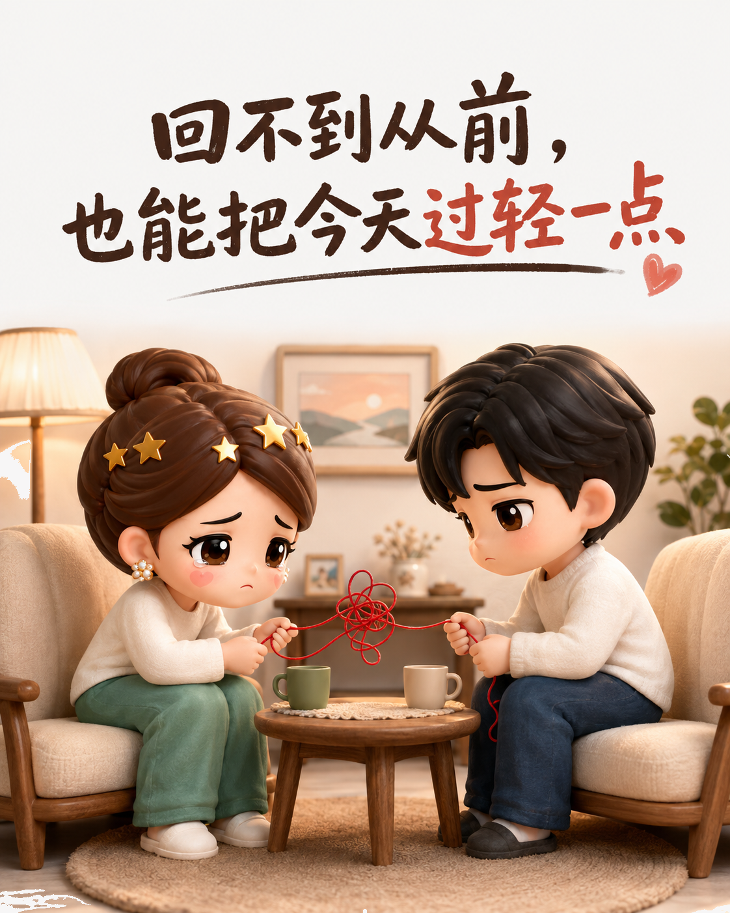
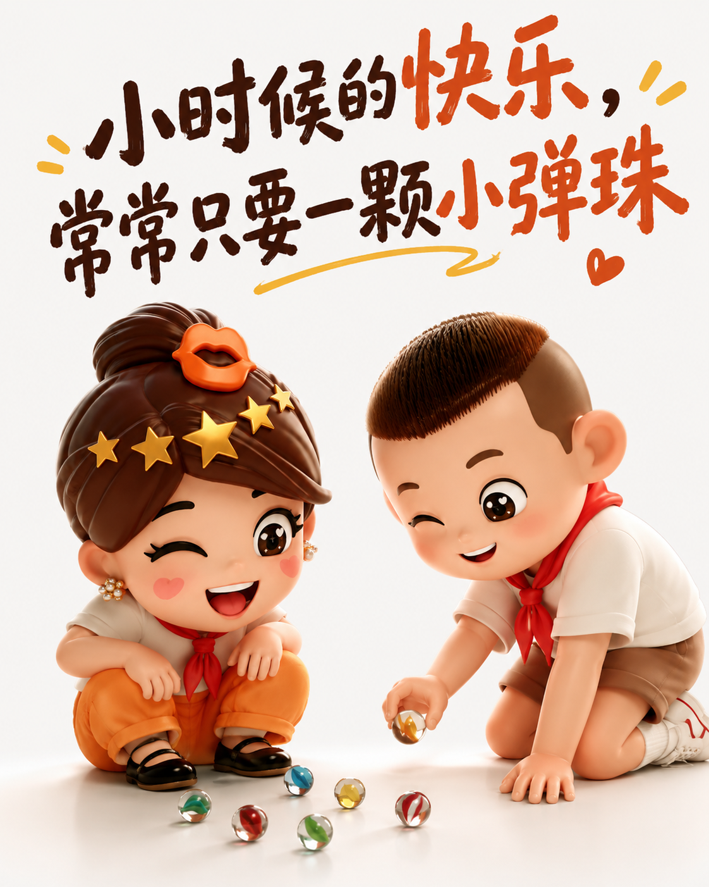
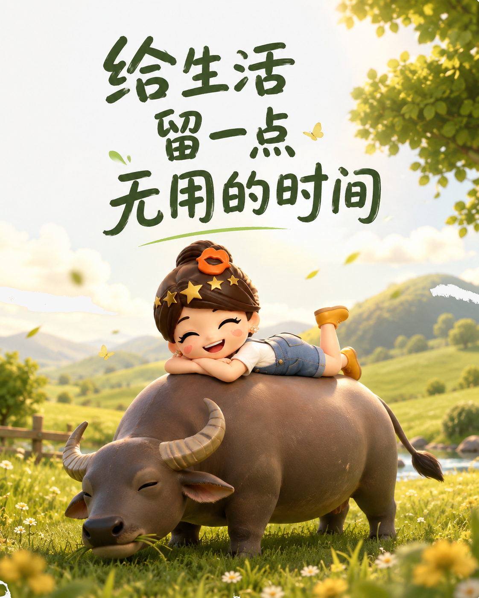

长大以后，别把轻松也弄丢了
后来才懂，怀念的是那份轻松。
长大，换来了什么
我们以为长大就是自由，得到选择后才发现，责任也随之而来。

真正想念的不是年龄
怀念的不是年龄，而是小事就能开心、有人替你操心的轻盈。

把轻松还给自己
回不去没关系，少一点硬撑，慢一点走，偶尔什么也不做。

把童年的从容，带回今天。
后来才懂，怀念的是那份轻松。
我们以为长大就是自由，得到选择后才发现，责任也随之而来。

怀念的不是年龄，而是小事就能开心、有人替你操心的轻盈。

回不去没关系，少一点硬撑，慢一点走，偶尔什么也不做。

把童年的从容，带回今天。